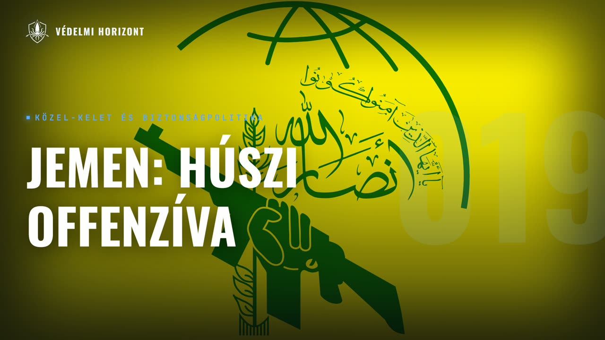

VÉDELMI HORIZONT #019 – Jemen: a húszi offenzíva és Szaúd-Arábia

Leírás
Résztvevők: Zsebeházy Bálint, Pásztor Ákos
Üdvözöljük a Védelmi Horizont kutatóműhely tizenkilencedik adásában!
Az adásban Jemenről beszélgetünk: arról, milyen szerepet tölt be az ország a világpolitikában, és miért került a figyelem középpontjába a húszi mozgalom. Vendégünk Pásztor Ákos, a Védelmi Horizont csapatának tagja, a Nemzeti Közszolgálati Egyetem (NKE) Biztonsági és Védelmi Politikai mesterszakának hallgatója. Először történelmi kontextusba helyezzük az országot: mit jelent a zaidita síita hagyomány, hogyan alakult az imamátus, az oszmán és a brit uralom, és hogyan jött létre az egységes állam 1990-ben? Ezután a húszi mozgalom eredetét vizsgáljuk Ali Abdullah Száleh rezsimjétől az arab tavaszon át a szaúdi vezetésű koalícióig, majd azt, hogyan illeszkedik a jemeni konfliktus az Egyesült Államok és Irán összecsapásába és a Vörös-tengeri hajózás elleni támadásokba. Szó esik a tengerparti offenzíváról és a kormányerők gyengeségéről, Szaúd-Arábia katonai és gazdasági sebezhetőségéről, a nyugati és regionális szereplők lehetőségeiről, végül a humanitárius helyzetről és arról, milyen forgatókönyvek mentén zárulhat a háború.
Leirat beszélőnként
Üdv mindenkinek! Ez itt a Védelmi Horizont. Az a podcast, ahol diplomáciai, gazdasági, hadípari és biztonságpolitikai szempontok alapján nézünk rá ugyanarra a témára, egyszerre, egy asztalnál. Nem Zsebeházi Bálint és most ketten ülünk a mikrofonok mögött. Velem szemben Pászor Ákos, a Védelmi Horizont csapat tagja és az NKL Biztonság és Védelempolitika mester szakhallgatója.
Szia, Ákos! Szervus, Zsebe! Köszöntöm én is a hallgatóinkat itt most, 2026. október 23-án, az 1956-os forradalom kitörésének 70. évfordulóján.
A mai témánk Jemen lesz, az ország maga is, hogy milyen szerepet tölt be jelenleg a világpolitikában. Az első ilyen felvezetés kérdésem hozzád Ákos, hogy akkor helyezzük ilyen történelmi kontextusba, hogy mi ez az ország, hol van, mik az ilyen főbb ismertetői.
Rendben, szóval Jemen. Nyugodtan lehet tekinteni véleményem szerint az arab civilizáció kezdőhelyének, kezdőpontjának a legelső komolyabb ténylegesen arab entitású országok, civilizációk az ókorban, azok a mai Jemen területén. Tűntek föl a Bibliából ismert Sába királynő országa, és nagy valószínűség szerint a kutatók szerint a mai Yemen területén helyezkedett el. Az akkori arab, vagyis inkább ezt ó délarabnak szokták mondani ezt a nyelvet, Ez különbözött a modern-arabtól, bár mind a kettő sémita volt, ahogy egyébként a Héber is, illetve az írásmód is eltért, és politeista vallást vallottak az akkori arabok, akik Yemen területén éltek. Aztán később a római birodalom is megpróbált itt hitfűvállásokat teremteni az Indiával való kereskedelem megteremtése miatt, hogy megkerüljék a Pártus, illetve aztán ide a Felsziát. Ez nem nagyon sikerült nekik. Azt hiszem az idősebb Frigius hívta Boldog Arábiának, Arábia Félixnek ezt a területet. Aztán, akik tartósan megtudták hódítani Jement, azok a... Szászlánid a Perzsia volt, azt egy ilyen 100-150 évig került iráni befolyásra le a terület. Végül is ezt bizánci és etióp egyesült seregek tudták megbuktatni körülbelül az 500-as években. Valahol Mohamed születése körül egyébként. Viszont aztán ugye a hijját követően, 622 Jemen volt az első terület mai Mekka és Medina mellett, akik felvették az iszlám vallást. Nem vagyok biztos, de ha jól tudom, akkor a legelső korániskola is a mai Jemen területéről származik, azt hiszem Szana városából. Aztán a későbbi arab hódítások után mellett a terület jelentősége, hogy a klasszikus arab félszigete is eltörpült, különböző helyi uralkodók, kisebb dinasztiák alakították ki itt a területeket, hol Jemen egy részét, hol az egész Magyarországot egyesítve, akik tartósan Meg tudták vetni a lábukat egyedül, azaz egyiptomi Ayub-Bida dinasztia volt a középkori dinasztiák közül, viszont helyi felkerés nekik is véget vetett az ő uralmuknak. Hogy mi is vezetett odáig, hogy Jemen az ennyire Különálló térség legyen itt az arab félszigeten belül is. Annak van egy részt a földrajzi oka. Ez egy nagyon magasan fekvő terület a központi Yemen. Fővárossal, Sanával, Sadával, illetve Taizzal, hogy csak a jelentősebb városokat mondjam. Szóval ez a rész, ez egy ilyen 1000-1500, de sokszor akár 2000 méter magasan is vekvő terület, egyébként rendkívül termékeny, és mivel a környező részeken gyakorlatilag országtartóra függetlenül csak sivatag van, így az arab félsziget népességének egy jelentős része is ide koncentrálódik, hogy majd későbbi adásrészekről is előrevetítsek egy gondolatot. A húszik által ellenőrzött jemeni területeken többen laknak, mint Szaudarábiában, ilyen 2-3 millió fővel, ami szerintem kifejezetten érdekes. És emiatt a nehezen megközelíthető terep miatt megtudtak, Maradni sajátos hagyományok, törzsiségek, hogy úgy mondjam, nem sok vizet zavartak egy jó ideig. Annál is inkább, mert hogy a környező szunita térségből ez a jemeni központi rész, ez külön válik, méghozzá azért, mert ők síták. Viszont nem azt a típusú 12-es síta vallást követik, mint Irakban, Iránban, illetve Azerbajcsánban, Bahreinben. A többségi lakosság, hanem úgynevezett ötös, vagyis ez zaidita ágát vallják a síta iszlámnak. Gyakorlatilag úgy képzeljük el, minthogy mondjuk az irániak és a jemeniek egy része, akik ugye a zaiditák. Ők is protestánsok, viszont olyan, mintha az egyik evangélikus lenne, másik meg református. Körülbelül hasonló a különbség, egyébként annyiból áll, hogy ugye a síta iszlám Ali Kalifa 12 utódját tekinti legitim kalifának. Ez ugye a tizenkettes, viszont a zaidik, ők megállnak az ötödiknél, aki ez a bizonyos Zaid ibn Ali volt, aki 740-ben a szunita Omajá dinasztia ellen lázadt fel az első fitna, vagyis polgárháború idején, és meg is haltott. A zaiditák tanítása szerint imám csak Ali és Fatima, ugye a felesége leszármazottja lehet. De a címet ki kell vívni, az igazságtalanul uralkodó elleni felkerés, vagyis a kurucs, az egyfajta válási kötelesség is, és ez a harcos imám eszménye az, ami a mai napig visszaköszön a jemeni síták, a zaiditák retorikájában is. Viszont azt talán érdekes is megjegyezni, hogy a zaidizmus teológiailag és jogilag közelebb áll a szunita iszlámhoz, mint az irány 12-es siítizmushoz. Nyilván itt nyugodtan mondhatjuk évezredes történelmi behatásnak köszönhető ez, ugyanis mindig is egy szunita tengerben voltak a zaiditák. Nem ismeri el a XII. rejtőzködő imámot, illetve a vilájat a faki elvét sem, amit ugye Khomeini ajatollag állított föl, hogy egyfajta köztárságon alapuló teokráciát honosítson meg, és ezért az iráni kapcsolatot én mindig is inkább egy politikai szövetségnek, mint valási azonosságnak gondoltam, illetve gondolom is a két fél között. Érdekes megjegyezni, ha már teokráciáról van szó, hogy ez a terület mindig is egyfajta teokratikus berendezkedés alatt állt egy szerény 100 vagy mi 1100 évig majdnem, 897-től 1962-ig. És ahogy említettem, ezek az imamátusok különböző dinasztiákkal, hol meg tudták szerezni egész Jement területét, hol csak ezt a központi Sada, Sana, illetve Taiz területét tudták uralni. Az imamátus alapítója egyébként egy Nagyon dallamos nevű Al-Hadi-Ilah-Ihhah-Yahya ibn al-Hussain volt, aki Szada városában alapította ezt meg, ami a hússzi mozgalomnak is a kezdete. Itt érdemes megjegyezni már a koraujkori történelemből, hogy volt egy kb. 150-200 éves oszmán uralom is, kb. az 1530-as évektől, de az 1600-as évek második felére ez a Zaidita imamátus kiüzte őket. Majd csak a 19. század közepén, a szuezi csatorna megnyitása után értékelődött fel a terület, ugye a Babel-Mandeb szoros véget, ugye a Vöröstenger másik pontja, vagy bejárata, vagy kiárata, attól függ honnan nézzük. És hát az oszmánok visszatértek, a partvidéket, amit jemeni arabul Tihamaknak hívnak, ezt el tudták foglalni. Az oszmánok jemeni világyetjének Mokka volt a központja, ugye a híres mokkai kávé is innen származik. Még a hegyvidéki területeket, amit teljes egészében a zaidita, síta imámok uraltak, ezt nehezen tudták elfoglalni, de végül is egy kompromisszumot kötöttek, hogy akkor ott oszmán vazalizáció hűbér lesz, De hogy végül is oszmán befolyás érvényesül, illetve az oszmán helytartónak is van némi hatalma, ha nem is teljes. És végül is 1911-ben és 1914-ben alakították ki a történelmi Észak- illetve Dél-Jemen határát. Ez volt az úgynevezett rózsaszín vonal, körülbelül a Bab el-Mandeb szoros lahics tartomány, illetve marib tartomány mentén végig fölfelé Szaudarábiába, Arab el-Hali sivatagig. Ide majd szerintem beszúrunk egy térképet. Aztán Jemen, Észak-Jemen, az gyakorlatilag ölükbe hullott a függetlenség az Oszmán Birodalom első világháborús veresége után, és majdnem szaudi kézre kerültek 1934-ben, de sikerült kiűzni őket. A területükről Hodeida, a legfontosabb jemenikikötő Áden mellett is szaudi kézre került, de végülis innen sikerült kiverni őket, viszont területi veszteség nélkül nem sikerült megúszniuk. Asir, Najran, illetve Jizan tartomány is, ha jól tudom. Igen, ez a három, akik szaudi kézre kerültek, és vannak is a mai napig, és így van történelmi alapon, itt is Zaidita többség van egyébként. A dél-jemeni terület, ahogy már egy fél gondolat utaltam rá a briteket tekintve, pedig 1839-től 40-től fokozatosan brit ellenőrzés alá került. Különböző szultánátusok vazalizációba a lakatlan, sivatagi rész, a hadramut, arabul azt hiszem a halál völgyét vagy valami ilyesmit jelent, az pedig ilyen wastelandként brit protektorátus alá került. Főkigötőváros Áden, illetve a Vörös-tengeren és az indiai óceánon lévő jemeni szigetek pedig a brit racshoz, vagyis a brit indiához lettek csapva. De Észak-Jemen az ugye sikeresen meg tudta őrizni minden gyarmatosító hatalommal szemben a függetlenségét a későbbiekben. Érdekeség egyébként, hogy ebbe a 34. Szaudi-Észak-Jemeni háborúban a jemenieket Mussolin Olaszországa támogatta a legjobban elitrávól érkező fegyverszállítmányokkal. Aztán történtek változások, ugyanis a II. világháború után, mint Szaudarábia szerepe egyre inkább megugrott a régióba, mint hiába egy nagyon konzervatív ország, de hogy egyrészt monarhia volt, másrészt ugye a konzervativizmusából keletkezett az antikommunizmus, az antiszocializmus, Ami miatt a nyugat egyik legfőbb partere lett, azt az amerikaiak már viszonylag hamar felismerték, az American Arabic Oil Company, vagyis ez Aramco egyébként már 1938-ban megalakult, szóval ott Franklin Delano Roosevelt stábjának volt egy nagyon jó geopolitikai és gazdaságpolitikai érzéke már a készülődő háború kitörése utáni időszakra. És hát a jemeniek, viszont ekkor ugye még az imám Herceg uralkodott, ez ugye még itt a 40-es, 50-es években vagyunk, viszont égett a revancs vágytól, illetve hát föl akarta szabadítani, általa is Jemennek tartott, illetve hát Jemen is, csak ugye most már egy jó ideje, legalább 100-150 éve, tőle különálló dél-jemeni területeket a brit uralomtól, illetve a szaudi uralomtól, A 1934-ben elvesztett három tartományt. Emiatt segítséget kért, méghozzá rengeteg szovjet, kínai és egyiptomi katonatiszt, illetve civilmérnök, politikai tanácsadó, közgazdász érkezett az országba az 50-es, 60-as évektől, hogy mást ne mondjak, ők alatta kezdték rendes kövezet, utakat kiépíteni, úgyhogy eléggé elmaradott lehetett az ország így Egy-két kikötő mellett. De végülis ugye ezek mivel szocialista rezsimek voltak, ezért ebbe az imánba nem nagyon bíztak, ezért 1962. szeptember 26-án a köztársasági forradalom győzött, viszont Úgy győzött, hogy polgárháború lett belőle, mert hát a különböző törsek, akik megszokták, hogy ebbe a röpke 1100 évben ugye egy ilyen teokratikus monarhiában éltek, nem mindenki akarta elfogadni a köztársaságot, illetve hogy háttérben legyen szorítva ez a hagyományos zaidita siítizmus, és bizony az ősi ellenség Szaudorábia, illetve a monarchisztikus arab államok többsége is beálltak a Yahya imám mögé, és egy nyolc éven áttartó véres háború, polgárháború kezdődött, amelyek csak 1970-ben lett vége. Rengeteg egyiptomi segítség érkezett a köztársaságáknak, akik megnyerték végül, de az egyiptomi hadsereg óriási veszteséget, 20-30 ezer embert is elvesztett, illetve eltűntnek nyilvánított, sokan közülük a mai napig nem lettek megtalálva. És véleményem szerint, illetve több szakértő szerint is a hatnapos háborúban jó részt azért volt ennyire béna az egyiptomi hadsereg, mert hogy ez a sok kieső ember, illetve hadi felszerelés, amit elvesztettek Jemenben a monarhisták ellen a köztársaságért támogatva, ezek így hiányoztak gyakorlatilag így a leltárból. Aztán ugye 70-ben végleg elbukott a monarhia, egy ilyen nászáris tarab, szocialista rendszer került előtérbe, viszont ez egy rejtelmesen korrupt rezsim volt, ugyanúgy, ahogy Egyiptomban a hadsereg vitte szinte végig a hatalmat. 1978-ban került hatalomra Ali Abdullah Saleh, akinek érdekes lesz Majd az életútja, mert igazából 2017-ig különböző módokon fog Jement, illetve már később csak Jemen egy részét uralni, hol a húszik támogatásával, hol a húszik ellen egyébként. Dél-Jemenről annyit érdemes megjegyezni, hogy a 60-as évek közepén Kicsivel a többi arab-brit gyarmat, illetve protektorátus előtt szabadult föl, így hát lett független, ugye két részletben. Az Áden környéki rész először egy délarab federációként egyesült, a Hadramut területtél lévő protektorátus pedig maradt protektorátus, és csak azt hiszem 69-70-ben egyesült a két tartomány Dél-Jemen néven, és az egyetlen Olyan közelkeleti állam volt, ami ténylegesen egy kommunista rezsim volt, Áden központtal, és bizony sok jemeni arab érkezett különböző ilyen vendégmunkás, illetve egyetemista hallgatóként a szocialista táborországaiba, ilyen KGST és egyéb szocialista kapcsolatokon keresztül, így többek között Magyarországra is. Ha jól tudom, akkor a legtöbb jemeni arab származású magyar, aki itt él, az dél-jemeni. Ezt talán érdekes megegyezni. Aztán az Ali Abdullah Szale vezetésével Észak-Jemen, az Egyesüldei-Jemennel ugye a Szovjetunió bukása után, egyébként itt két polgárháborút, vagy hát nem is polgárháborút, mert két független állam volt, Két háborút vívott egymással Észak és Dél-Jemen a 70-es-80-as években. Végülis 90-ben egyesült a kettő, itt azonban nagyon érvényesült Észak dominanciája. Azt talán érdemes megegyezni, hogy hiába volt a Dél kommunista, az Észak megint a harmadik utaz szocialista, de a brit hatás, illetve a későbbi nagyon erős központosított államiat, Dél-Jemen az egy lényegesen fejlettebb terület volt, mint Észak, és kevésbé volt törzsi, illetve Egy alapvetően szunita többségű országrészről van szó, még ha a vallásgyakorlás azon a részen nem is annyira doktrinális, mint mondjuk éjszakon. Éjszakon függetlenül attól, hogy valaki síta vagy szunita. Egyébként talán arról még nem beszéltem, de a vallási arányok az összjemeni térségben úgy vannak, hogy ilyen 60% szunita, 40% síta. Szóval viszonylag kiegyenlített. Aztán beszéljünk a fő a témánknak a fő csomópontjáról, ugye a húszikról. Őket egyébként egy Abdulmalik al-Húsi nevezetű úriember alapította a 90-es, 2000-es évek fordulóján. Pontos dátumot azért nem tudunk, mert megoszlanak erről is a források. 2004-ben ölik meg az Ali Abdullah Szale vezette kormányerők. Ugye itt meg lehet jegyezni, ezt miért csinálták? Hát gyakorlatilag miután megbukott az imamátus 1962-ben, azóta ez a Sita identitása éjszak-jemennek, ez fokozatosan háttérbe szorult, a délelvaló egyesülés óta pedig kifejezetten, mert hogy az éjszaki dominanciájú katonai hunta, az így a törzsiséget és a különböző vallásságokat, azt háttérbe akarta mozdítani, és a különböző klánokból, törzsekből. Ezt az identitást valamilyen módon ki akarta írtani, de hát ez nem nagyon sikerült, már csak azért sem, mert gyakorlatilag hiába, hogy ilyen törzs- és klánellenességgel kampányoltak, de gyakorlatilag csak az Észak-Jemeni szekuláris törzsek, illetve a belőlük kikerülő katonatisztek uralták a már egyesített Jement 90-től az arab tavasz kezdetéig, 11-12-ig. És egyébként ez a húszi mozgalomegyedeteknek a húszi klánnak törzsnek a nevéből eredeztető, és a haza- illetve a nemzetközi sajtóban is így jelennek meg. Azonban a hivatalos nevük az Ansar Allah, vagyis Isten partizánjai nevet viseli gyakorlatilag. Ez a legpontosabb fordítás. És a jelszavuk pedig 2002-ben alakult ki, ez az úgynevezett szárkha, ami az ászlajukba is bekerült, ugye mi az vertikális módon olvasható, ez röviden annyit jelent, hogy Allah a leghatalmasabb, halál Amerikára, halál Izraelre, átok az iszlámra, illetve a győzelem az iszlámé. És Ali Abdullah Saleh jelentős amerikai támogatást kapott a Bush adminisztrációtól a 2000-es években a mozgalom felszámolására. Ez azonban nem sikerült, akkor még nem is annyira iráni támogatást élveztek, akik ezekben az időkben a rivális talib, afgán, illetve száddami iraki rezsim megbukásának nagyon is örültek. Politikai, vallási okokból ezért ott alapvetően támogatták is az amerikaiakat ezekben, még ha ez így nem is nagyon volt, illetve van kimondva sem Washington, sem Teherán által, de ezt nyugodtan kellett jelenteni, hogy ez így volt, hanem Kadhafi Líbiája kezdte őket nagyon komolyan felfegyverezni. És gyakorlatilag 2004 volt az az időpont, amikor le lehetett volna győzni őket, de ez nem sikerült, ugye ezt az apukát, ezt a Huszányt ugyan megölte Szale elnök, megölette, de a fia, az akkor 20-as évei közepé járó Abdul Malik átvette az uralmat a mozgalom fölött, ugye ez a Jemen legészakibb része Száda. Aki azóta is vezeti a mozgalmat, de most már ugye nem szállt el a központ, mert hogy 2014-ben az arab tavasz jemeni hatásaira válaszul, beveszik gyakorlatilag szanát a felfegyverzett húszi miliciák. Mert hogy az arab tavasz következtében a Száleh rezsim ellen megalakult egyfajta népfront, szunita, sítaszérsőségesektől, a déli szeparatistán által liberális demokráciákig, szóval ilyen klasszikus arab népfront alakult, akik ugyan megtudták dönteni Száleh rendszerét, de ugye, ahogy már fölvezettem, totális ős káosz is alakult ki. És olyannyira őskeosz alakult ki, hogy az új ideiglenes kormány Szana elfoglalása után az szembe helyezkedett mind a húszi mozgalommal, mind Szaleh-hel. Ezért a két ősellenség, akik egy pár évvel korábban még írtották egymást, Összefogtak, hogy elfoglalják egész Jement. És nagyon jól álltak, egészen a Szauderábia vezette koalíció szárazföldi beavatkozásáig. Elérték az indiai óceánt is, Zinjibar városánál, illetve Aldent is majdnem sikerült bevenni, illetve Thaiszt is. Ezeket aztán végülis a városkapujnál ki lettek szorítva, és körülbelül egészen szeptemberig lévő területekig szorította vissza őket innentől az Összarab Koalíció szaúdi vezetéssel. De a mozgalmat a nehéz terep, illetve a nagy társadalmi beágyazottság miatt ténylegesen megtörni nem sikerült, csak beágyazni. Hodeida ostroma lehetett volna az 2017-18-ban, ugye ez a 20 Jemen legfőbb kikötőváros a Vöröstengyer partján. Ha ezt beveszik, akkor fordulatot volna a kocka, de sikeresen megvédték a 20-ig. És kitolták a határt egy kicsit délebbre. Illetve a szaúdiak aztán még 17-ben megkörnyékezték Száll elneket, hogy ugyan mondjon már le, meg álljon át, meg akkor valami, és akkor kapon amnestiát, stb. Ő is, meg a családja is. Ő hajlott is volna rá, és meg is próbálkozott egy putccsal, de ez elbukott, és a húszik, akik vele egy oldalon hartoltak, végül is megölték. Szóval gyakorlatilag az Abdul Malik megölte az apja gyilkosát, aki a szövetségese volt, Ilyen drámai hangvétel legyen. És aztán 2022-ben ENSZ közvetítéssel alkult meg egy tűzszünet, miután már olyan képességekre tettek szert, akkor már jól részt iráni támogatással, iráni drónokkal tudták már a szauder-elbiai Aramco létesítményeket lőni. És így érkeztünk el a mostani közel-keleti válságig, amelyben a húszik is aktív szerepet játszanak.
Igen, akkor helyezzük is kicsit így kontextusba, nagyon köszönjük szépen ezt a felvezetőt, de hogy a jelenlegi az Egyesült Államok és Irán konfliktusába hogyan lehet elhelyezni ezt a jelenlegi konfliktust?
Igen, hát ahogy említettem, különböző ideológiai, illetve politikai okok Miatt is, illetve a nagy földrajzi távolság miatt a jemeni húszikat nem lehet egyszerűen egy hezbollakhoz, iraki miliciákhoz, vagy akár a Hamászhoz hasonlóan egy egyszerű iráni proxynak nevezni, hanem ők ilyen külső szövetségese gyakorlatilag Iránnak. Már csak azért is, mert 2017 óta ők jemeni legitim hatalomként tekintenek magukra. Van egy kormányzati Fedő szervük, hogy mondják ezt, szóval ilyen árnyék szervezet, hogy ők nem csak egy mozgalom, hanem jemeni állam legitim képviselők, ezt Supreme Political Council-nak, legfelső politikai tanácsnak hívják. És emellett viszont ugye valahogy a segítségnek ára van, valahogy be kell avatkozni irány mellett is a különböző konfliktusokba, illetve ideológiai okok is vannak amellett, hogy a Gázai háborúban ugye az Izrael ellen tengeri blokkádot hirdettek, hogy az Izraelbe menő, illetve az Izraelhez valamilyen módon kötődő hajókat, most teljesen mindegy, hogy az melyik ország zázlajat hajózik, vagy melyik ország tulajdonában van, Azokat elkezdték 2023 őszin telén kilövöldözni a Vörös-tengeren a Babel-Mandebszorostnál, amely után végül is Joe Biden vezette Amerika, meghirdette Lloyd Austin védelminiszterre az élen. A Prosperity Guardian Operation-t, amelynek végül is az lett a végeredménye, ez már a Trump ciklusra esik, hogy egy fegyverszünetet kötött az Amerikai Egyesült Államok és a húszi mozgalom, és a húszik azóta nem lőttek ki. Tudomásom szerint vörös tengeren hajózó hajót ott a Babel-Mandeb térségénél. Szóval elsősorban a világkereskedelmét itt érinti meg, emiatt rettenetesen felmennek a hajózási árak, az olajára, gyakorlatilag mindent, amit el tudunk képzelni, mert hogy ugye gyakorlatilag egy állami kalózkodást folytatnak a húszik a különböző hajók ellen. Emellett ugye, ahogy már említettem, a másik fontos azok a különböző szaudorábi elleni támadások, amik csak az elmúlt hetekben erősödtek föl, ez azért egyáltalán nem volt így a korábban, még ha ugye Egy rakétádrónt bebelőttek, illetve a délszaudarábiai területekre bebetörtek szárazföldileg is a húszik, de egyébként ez, hogy ilyen mértékben, ilyen képessége legyenek a húsziknak, ez egyáltalán nem volt jellemző korábban. Gyakorlatilag nyugodtan ki tudom jelenteni, hogy Irán tette egy potens katonai Alakulattá, potens katonai szervel rendelkező entitássá ezt a húszi mozgalmat. Katonai tanácsadók által többen találgatnak, de valószínűleg 80-100 iráni katonai politikai tanácsadó lehet a húszi mozgalom mellett, illetve a különböző Kalózók, illetve egyéb csempész, alagutak, hát nem is alagutak, csempész útvonlak mentén érkező fegyverekkel és technológiákkal. De teljesen egyértelmű, hogy az amerikaiaknak célja itt a megosztás, hogy a húszi fegyveresztőjönet után közvetlenül avatkozott be 2025. júniusában a Trump adminisztráció és a Natanz, illetve Fordovi erőmű lebombázásával Iránban. Illetve a mostani mártiusi all-out Irán bombázása során is igyekeztek a húszikat távol tartani. A húszik azonban akkor még csak névileg, de csatlakoztak az Irán vezette háborúhoz, ami aztán az elmúlt hetekben, ahogy már mondtam, kiélesedett.
És tulajdonképpen, tehát akkor itt vannak a huszik, akik viszonylag potens katonai képességekkel rendelkeznek, és ennek konkrétan milyen mutatói vannak, vagy hogy a kormányerők védelme összeomlás szélére került-e? Tehát hogy, vagy hogy konkrétan mondjuk Szaúdorábja ellen milyen fajta veszteségeket okoztak? Vagy ugye mondtad, hogy igazából most jelenleg a Babelna mennebb szorosban nem lőnek.
Igen, ugye itt a fegyver szünet az effektív. Ez gyakorlatilag úgy kezdődött ez a mostani háború Szaúd-Arábia, illetve a húszik között, hogy júliusban egy húszi delegáció érkezett Iránba, Ali Hamene és családjának a nemzetközileg is nemzetközi vendégekkel teletűzdelt eltemetéséhez. De azt tudni kell, hogy a szanái reptér az nem működőképes, vagy úgy nem működőképes, hogy nem működhet, mivel 2014-15 óta Szaudrábé egy légi blokkádot engedélyezett, vagy hát implikált életbe a húszi ellenőrzésű Jemen fölött. Azonban itt valahogy lehet, hogy meg tudták kenni az irániak, hogy azért mégis ez csak egy ilyen Temetés, gyászszertartás, ezért légy szíves, engedjétek már át ezt a delegációt. És ezt föl tudott szállni ez a kormánygép és a húszi delegáció. Pontosan őszintén nem tudom, hogy kik voltak ott, de gondolom a politika, illetve vallási vonalról voltak ott prominens képviselők. Szépen odament Teheránba, leródták a gyászszertartást, aztán visszamentek. Azonban úgy gondolták az irániak, gyakorlatilag ilyen ravasz selszövéses módra, Hogyha odamehetett egy gép hozzájuk, akkor ők is hagyj menjenek már oda. És hát oda is mentek. Oda is mentek, viszont nagyon hülyék voltak szerintem itt a szaudiak, ugyanis mielőtt leszállt volna a gép, lebombázták a szanái repteret, viszont az irániakat szállító gép az Hodeidában, a kikötővárosban zárt le, amit már nem mertek a szaudiak lebombázni. Vagyis a szaudiak sikeresen elérték azt, hogy Úgy mondom, hogy szinte ok nélkül ők lőttek először, és ráadásul még a vélhetően fegyverszállítást, illetve a katonai tanácsadókat sem sikerült megakadályozni, hogy leszálljanak. Vagyis, hogy úgy mondjam, ilyen 0-2 volt az állás ekkora 20 év javára, és a 20 évet az rettenetesen feldőítette, mert hogy civil infrastruktúrára támadtak, záruljál, amit ők is csináltak, illetve csinálnak már egy jó ideje, de ez nem ide tartozik. Nyilván ezzel is azt akarom bemutatni, hogy egyik fél sem szent. Egyáltalán. És gyakorlatilag ez volt a háború kiindulásának a Első üdleges oka, hogy augusztusban még nem nagyon van tudomásom, hogy különösebb hadmozulatok történtek volna. Talán belövések, igen. Szeptember elején kezdődött viszont a nagy offenzíva. Ezt egy hadművelet keretében, gondolom iráni segítséggel tervezték meg heteken, hónapokon keresztül. Ezt most angolul fogom mondani, mert szerintem magyarul hülyé hangzik ez a Allah is more severe in judgement and more severe in punishment even nevű hadművelet volt, amelynek során Végig vonultak gyakorlatilag nagyon-nagyon kis ellenállással a Vöröstenger teljes partszakaszán, amit a kormányerők ellenőriztek, és szeptember 3-tól 7-ig, 8-ig elfoglaltak három-négy kiködőváros köztük Mokkát, amit már ismertem, ismertettem, illetve Dubavárosát. És a Perim-szigetet, ami közvetlenül a Babel-Mandebszoros legszűkebb részénél van, ahol már csak ilyen 10-11 kilométerre van Afrika partjai, Eritrea, illetve Djibuti. Hogy mi lehetett az oka, hogy ilyen hatékonyan voltak a húszik itt? Kormányerők összeomlása. Ez teljesen egyértelmű. Rosszul voltak felfegyverezve, nem készültek erre, Évek óta beállt a frontban, és akkor ők az alacsony fizetésükért úgy nem tudom, elel voltak, így rabolgattak vagy akármi, és ebből következik a második ok, az alacsony társadalmi támogatása A kormányerőknek azt érdemes megjelzni, hogy ez a Tihamah, vagyis a partvidék, ami viszont egy alapvetően szunita többségű rész, mégis a képek, videófelvételek alapján az emberek elsöprő többsége örült az Ansarallah, vagyis a húszik beérkezésének, vagy csak egyszerűen nem mertek nem örülni, mert hát akkor így picit meglettek volna rövidítve itt-ott. Ezt nem tudjuk őszintén, de lényeg, ami lényeg, hogy alacsony a kormányerők népszerűsége, illetve ezek az úgynevezett fantom katonák jelensége állt itt még, hogy egyszerűen annyival több katonát irattak be, akik nem is léteztek, vagy csak papíron, illetve nem ott, hogy A fegyvereiket, fegyverpénzüket, zsoldjukat, stb. azokat fizetésgyanánt az őket támogató szaudiaktól le tudják hívni, le tudják folyósítani. Ez a háromok volt az. Szóval az alacsony társadalmi népszerűség, ez az intézményesített korrupció, illetve a húszik jó taktikaérzéke. Ezt a háromokot mondanám. Egyébként ez Thais kormányzóságban történt a legtöbb offenzíva. Ez a Vöröstengeri partvidék ez mind ott van. A Taiz városa pedig most már teljesen osromgyűrűben van. Ez Jemen harmadik legnagyobb városa. Ugye ez viszont a partvidék ellentétben itt lassabban haladnak a húszik, mivel ez egy nagyon hegyvidéki terület, de véleményem szerint hamarosan el fogják Taizt is teljesen foglalni a húszik. És onnantól kezdve, hogy mi lesz a következő célpont, illetve hogy lesz-e fegyverszonylat azután, az nem csak Áden, ahol ugye van a jemeni kormányerők bázis, a SANA a 20-ig, illetve Riad között fog eldőlni, hanem sokkal inkább szerintem Tehrán, Washington, illetve Tel Aviv 3-asának a Viszonyrendszere is közre fog játszani, ugyanis jól látható szerintem az, hogy a Szaudorábiának úgy Isten igazából nem nagyon akar támadólag segíteni senki, még ha védelmileg igen. Mind az Egyesült Királyság, mind Franciaország, mind Törökország, mind Pakisztán, és legújabban Egyiptom is hajlandósított a szaudi légtérvédelmének segítésében, merthogy a húszik elég erőteljes légi zárlatot hirdettek. Gyakorlatilag, ha jól tudom, teljesett a szaudiak ellen, és bizony itt rendesen megszórják a civil infrastruktúrát, nem csak a katonait. Ugye azt hiszem múlt héten volt a nagyon hírhetté vált riádi reptér elleni rakétatámadás, ahol több tucat embercivilek vesztették az életüket a húszig terrortámadásában.
Még a kormányerőkhez csatlakozva, hogy ezt még érdekes lehetne kifejteni szerintem, Hogy ugye a három ok, amit igazából elmondtál, az mind a társadalom rezilienciának így a hiányából fakad. És hogy ez miért van? Miért nem tud politikailag stabil lenni a kormány oldal?
Ez egy nagyon jó kérdés, ugye nem véletlenül mondtam talán ennyi történelmi előzményt, ugye egy eléggé tagolt térségről van szó, akik csak 90 óta egy állam gyakorlatilag, egy szanái, egy mokkai, illetve egy Ádeni vagy Hadromú térségében élő az nem nagyon tud vélemény szerint közösséget vállalni a másik iránt. Itt elsősorban ezeknél az arab államoknál, de különösen Jemennél a törzsiség az, ami a legfőbb ok és okozat mindennek. Szóval így gyakorlatilag törzsek, klánok támogatnak X oldalt, illetve támogatnak Y oldalt. Azt, hogy gyakorlatilag Az partvidéken, itt a Tihamának a déli részén élő törzsek, nagycsaládok kiket támogattak, vagy kiket támogatnak, azt nem feltétlenül tudni ennyiből, de véleményem szerint egyébként, és Wolfgang Pusztai is ezen a véleményen van, híres elemző az Al Jazeera-nak is szokott nyilatkozni, hogy gyakorlatilag Mivel Jemen sosem volt egy ország, illetve rengeteg kormányhoz kötődő különböző korrupciós ügy van, ugyanúgy sanyargatják a népet, mint adott esetben a húszig, ezért nem tud intézményesülni a hadsereg, nem tud intézményesülni a különböző társadalmi reziliencia, és ezért gyakorlatilag, mint megváltó Ha ez kicsit túlzás is, várják a húszikat, hát ha ők egy jobb világot tudnak teremteni. Illetve azt azért nevegyük el, hogy a szaudiakat sokszor vádolták, vádolják azzal, hogy a nyugatiakkal és ezenből is Izrael-lel összejátszik bizonyos kérdésekben, és hát ez nem nagyon népszerű az alapvilág többi államában sem. És ez a kép, hogy gyakorlatilag itt szaudi pénzenők el van, a jemeni kormányerők sokszor nem is Ádenben vannak, hanem riadbai nöccsilagos luxushoteleknél élnek gyakorlatilag a nyugat által pénzelt szövetségeseik pénzén, még ők otthon éheznek a szankciók, a betegségek stb. alatt. Ez szintén nem egy népszerű dolog, és ilyen szociális, szocialista felhangja is lehet, Ezért állnak a húszikhoz, akiket így a néphez közelebb éreznek, így tudom ezt összefoglalni elsősorban. A húszik legnagyobb támogatottsága az alacsony társadalmi osztályokból ered. Jó részt nyilván a síták közül, de sok szunita is támogatja őket.
Tehát akkor az alapállás jelenleg az, hogy van egy tagolt államunk, amely igazából kicsit mesterségesen lett létrehozva.
Pontosan, pontosan.
És vannak nagyhatalmaink, akik a status quo fenntartása érdekében Támogatják a kormányerőket a rebellisekkel szemben.
Igen. Ez azért fontos kianksúlyozni, talán ezt a bevezetőnél nem nagyon mondtam el, hogy hiába tudta ezt a tízes évek közepén második felén ez a Szaudarábia vezette kormánykoalíció alaposan visszaszorítani a húszikat több térségből, elsőről nyilván a sivatagosabb részéből jelennek, De rettenetesen komoly veszteségeket szenvedtek el több ezrest, mind az emirségek. Azt hiszem, Marokkó, Szudán, még az elbasírvezette Szudán, illetve Szaudrávia is nagyon-nagyon magas veszteségi rátával tudtak úgymond dolgozni. És, mint látható, megtörni nem sikerült a húszikat, a magterületeket, ilyen már legnépesebb városait a szalvabrai suralmuk alá tudták vonni. Talán ezért óckodik véleményem szerint a legtöbb állam. A tényleges újra bevonulás mellett Jemenbe, és ezért hajlandóak csak Szaudarábiát védeni.
Igen, és Szaudarábia, ugye akkor kicsit beszéljünk még Szaudarábiáról, hogy akkor nyilván a kormányerők támogatása miatt célkeresztbe került, tehát célpont lett. És igazából azért érdekes ez a szituáció, mert Szaúdarábia költi a világon nyolcadik legtöbbet hadseregre. Tehát a katonai költségvetése a nyolc évek legnagyobb a világon, ami elképesztő nagy összeg. Nagyon fejlett fegyverrendszerei vannak az F-15-ös vadászgépektől kezdve különböző nyugati rendszerek.
És a háború közben, most a mostan kitörő háború közben kérte az amerikaiakat, hogy adjanak el nekik F-35-ösöket is.
Igen, illetve Donald Trump most meg is támogatta Ilyen emergency fegyverek-szportokkal, amivel a kongresszus meg tudta kerülni és gyorsabban tudja eladni a fegyvereket Szaúd-Arábiának. Tehát igen, itt látunk egy nagyon drága hadsereget, de hogy te mit gondolsz, ez miért nem tud hatékony is lenni?
Ennek alapvetően, mint mindennek az életben, szintén társadalmi okai vannak. Gyakorlatilag az összes öbölállam hadseregéről jó részt elmondható az, hogy itt nem az úgymond ős lakosság, akik ténylegesen törzsökös állampolgárok harcolnak, mivel ez egy nagyon-nagyon kis része az adott országnak és egy rettenetesen szűk elit. Például ez szerintem egy ismert tény, hogy az Egyesült Arab Emirségeknek mindössze a 10%-a az, aki emirátusokbeli arab. Na most Szaudaráviában, ha nem is ilyen arányban, de körülbelül ilyen 50-55%-a csak szaudi arab a lakosságnak, és a különböző ilyen nem értelmiségi, nem ilyen high quality munkákat, azokat általában különböző vendégmunkások és társaik látják el, és bármilyen meglepő, A hadsereg jó része is ilyen, kivéve a vadászpilótákat. A vadászpilóták azok, akik kifejezetten a szaudi királyi családból kerülnek ki egyébként. Viszont az egyszerű közkatonak, beleértve a légvédelmet is, jó részt pakisztániak. Pakisztáni vendégmunkások, akik a munkájukat így a hadseregben látják el gyakorlatilag. És hát nyilván, ha nem a saját hazám, ne adj Isten még, tegyük fel, én egy pakisztáni síta vagyok, akikből van 40 millió valamennyi, és a testvérem mondjuk iráni zsoldosként harcol, harcol Szíriában. Líva Fatemiun brigádban az a pakisztáni sítáknak a milícia, akit a forradalmi gárdák felállítottak. Én meg itt itt vagyok Szaudráviában és védem a légteret gyakorlatilag. Nem biztos, hogy annyira lelkes vagyok így a kormányerőket szolgálni, ahogy így finoman fogalmazzam ki magam. Szerintem a másik ok, ami ez kifejezetten Stoderevio-specifikus, például én biztos vagyok abban, hogy az Egyesült Terepemérségeknek például, ha másban nem légvédelemben egy sokkal potensebb arzenája van, már csak azért is, mert ők kapták a legtöbb iráni rakétát és ront, és egy szerintem teljesen jó orányban tudták elhárítani, az az, hogy hagyományosan a szaudi monarhiák azok féltek a hadseregtől, mivel az egyiptomi szkenáriót tartották Elképzelhetőnek, hogy majd a hadsereg fogja az ő monarhiájukat is megpuccsolni, minthogy az 50-es években Nasserék tették azt Faruk királlyal, és így egy nagyon távolságtartó valaminek, entitásnak rakták be az államon belül a hadsereget, és hiába kap sok pénzt, de hogy így politikailag, gazdaságilag, döntéshozatlapban nem nagyon szólhatnak bele A más országokkal ellentétben, és így ezért szerintem így a parancsok, illetve más dolgok is lassabban jutnak el, és szerintem nem is olyan szervezettek emiatt. Én ezeket a dolgokat emelném ki. Szerintem az eszközparkjuk az egyik legjobb kellene, hogy legyen a világon, úgyhogy itt az emberi és társadalmi tényezők az, amire jó részt hagyatkozhatunk.
Igen, még azzal egészítenél ki, amit így, amúgy így, kb. így mondtál te is, de hogy a nyugati fegyvereket importálták, de a nyugati hadművészetet, illetve katonai kultúrát nem, hanem egy saját, egyedi, ilyen arab stílusú hadsereget szeretett volna Szaúd-Arábia felépíteni, és mondjuk az emirségekkel ellentétben nem is Vett fel annyi nyugati tanácsadót, itt ilyen Ausztrálokra, Amerikaiakra, Britekre. Gondolok. Igen. Tehát a következő blokkunk szerintem érdekes lehet, hogy akkor a globális kereskedelemre milyen hatással van, illetve hogy az, hogy Szaúd-Arábia célpontá vált, ez így konkrétan milyen gazdasági hatásai vannak. Ugye, amit már mondtál, hogy jelenleg nem a hajókat lövik, hanem az aramkót.
Gyakorlatilag gazdaság- illetve légtérblokádot hirdettek, viszont most csak Szaudorábiá ellen. Ugye ez más, mint amikor Izrael, illetve a nyugati hajók ellen hirdettek, több okból is, ugyanis akkor nem uraltak ekkora részt a Vörös-tengeren, mint most gyakorlatilag a legszűkebb részt is. Szóval gyakorlatilag ők ellenőrzik, hogy nyugat felől, a Vörös-tenger felől mi jut be, gyakorlatilag Szaudorábiába. Ami eléggé vicces, merthogy a másik oldalon meg a Hormuzidoros a másik élet, amit szintén Irán ellenőrizi, így a Szaudarábiának a déli tengeri határai az így levannak zárva gyakorlatilag teljesen. Talán a világgazdaságra ez kevesebb hatást gyakorol, olyan mértékben, hogy itt nyilván a húsziknak is a célja a dividert impera, az meg is rullakodj, hogy a lehető legtöbb államot határolják el Szaudarábiától, azáltal, hogy Így őket nem veszélyeztetik, biztosítják a szabad tengeri hajózást, adott esetben még ki is egyeznek velük, és mondjuk egy olyan szintű vámrendszert akarnának majd közép-hosszabb távon létrehozni, mint mondjuk az irániak. Ha tartósan, fogják tudni ellenőrizni a Babelman-Debb szoros legszűkebb részét is, erre egyébként minden esélyük megvan. Szóval itt a fő indíték a véleményem szerint a 20-iknek az jelenleg nem a globális kereskedelem, illetve a kőolaj árának a Fölemelése, elletetlenítése, hanem Szaudarábiának az elszigetelése, hogy ez ne működjön, illetve hogy a szaudiak szálljanak ki a háborúból, a jemeni kormányerők finanszírozásából. Akkor talán őket is békén hagyják, véleményem szerint ez lehet az ok. Nem hiszem, hogy itt lennének a húsziknak ilyen, ha még retorika szintjén meg is van, de ugye revizionista felhangjai, revizionista elképzelései, hogy itt az elveszett jemeni tartományokat biztoszereznék. Nyilván ez számukra jól hangzik, de ennek szerintem teljesen realitása nincsen. Nem hiszem, hogy olyan mértékben tudnánk destabilizálni a szaudi államat, hogy itt a síták fölkeljenek, stb. Aki itt veszélyben van, az vélemény szerint Mohammed bin Salman maga, aki kifejezetten a prosperitás, stabilitás, modernizáció hármasával uralkodi kvázi tíz éve. Fontos megérdezni, hogy nem ő a király, de a de facto uralkodó, igen, ő a koronaherszeg, a 91 éves apukája jelleg is a király. Nem hiszem, hogy már annyira nagyon sokáig uralkodna teljesen, és ő lesz az uralkodó, valószínűleg Mohammed bin Salman, hacsak nem. Emiatt a szaudi szempontból abszolút kudarcos háborúnak a következményeiben olyan mértékben destabilizálódna az ő uralma, hogy ilyen családon belüli parota forradalomban Megbukna. Úgyhogy ez mennyire nem elképzelhetetlen, még ha a nyugati szemszögből ilyen erős embernek is tekintjük őt, hogy gyakorlatilag ő is így került hatalomra, nem ő volt a kiválasztott koronahárcag, egy viszonylag fiatal emberről van szó, azt hiszem 40-41 éves lehet, ha jól tudom. De ő is a fél testférét, amiből szerintem egy jó pár száz lehet neki egyébként, azt megpucsolta gyakorlatilag. És véleményem szerint egy szaudiak szempontjából vesztes háború, ha ez egy tartós memorandummal, békével is zárul a húszik irányába. Szerintem Ahmad bin Salman és a köre az lehet, hogy ilyen Vagy békésen, vagy nem annyira békésen távoznia kell a riádi királypalotából. Ezt simán el tudom képzelni. Hogy ez mennyire érdeke más családtagoknak egészen biztos, mert hát hatalom az hatalom. Hogy a nyugatiaknak mennyire érdeke, Az nyilván a potens vagy potenciális utód, illetve rivális jelöltöktől függ, hogy mennyire nyugatbarátok, mennyire akar közeledni Izraelhez, mennyire akar kiegyezni Iránnal, mennyire akar Kína, Oroszország és a globális dél a BRICS felé nyitni. Ugye Szaudarábia egyébként ugyanúgy tagja a BRICS-nek, mint Irán, illetve megfigyelő a Shanghia Együttműködési Szervezetben és 2023 óta Van egy aláírt békememorandum kínai közvetítéssel Irán és Szaudorábia között, szóval itt elsősorban talán Irán az úgy játszik Szaudorábiával, hogy ő maga mint Teherán a simogatja, a főbb szövetségese pedig Üti, hogy a lehető legtöbb pénzt sajtolja ki belőlük, illetve nyilván Teheránnak is az érdeke szerintem a Mohammed bin Salman és a stábjának, klányjának az ilyen bukása vagy mellőzése. Szóval destabilizálódni nem fog Szaudrábiától, nem kell félni. Civil halottak vannak és sajnos lesznek is. A húsziknak célja így az úgymond Hogy mondják, ezt így veszélyessé tétele Szaudarábiának, hogy itt mindig terrortámadások, rakétázások, háborúk vannak, még ha ezek nyilván célzott infrastruktúráis helyekre is mennek, nem feltétlenül fognak ezek Riad, pláne nem Mekka, Medina közepébe becsapódni ezek a rakéták, illetve drónok.
És a nyugatot most ilyen általános leíró fogalomként használtad, de hogy ebben a Konfliktusban, helyzetben egyébként az amerikai, illetve európai érdekek azok mennyire konfigurálnak? Vagy mennyire közelednek, konvergálnak? Távolodnak, divergálnak egymástól.
Igen, hát nem véletlenül használtam itt leíró fogalomként, mert gyakorlatilag itt gyakorlatilag mindenki Szeudorábiát támogatja, csak ki milyen mértékben. Ugye, ahogy korábban mondtam, az Amerika Egyesült Államok is a 20-ig között van egy 2025 közepe óta effektív tűzszünet, amelyre itt Donald Trump, illetve Pete Hex-et is mondott, hogy nem szándékozik megszegni, De hogy az újjuk a ravaszon van, vagy valami ilyesmi, és figyelmel követik itt a húszikat, hogy itt mit csinálnak Szauderábiával. Talán a múlt heti riádi reptilelleni lerakétázás volt az, amikor talán felmerült az amerikai administráció körébe, hogy itt lépnek valami komolyat. De igazából, mivel stratégiailag nagyon kivadnak merülve készletileg itt a közel-keleti térségben, és ami van, azt tényleg egy esetleges, később kitörő irán elleni háborúra szánnák, szánják. Így ők se nagyon akarnak beavatkozni itt egy újabb úgymond fölösleges háborúba, mert hogy Bár részeredményt el tudtak érni ezzel a tűzszünettel, illetve hogy nem támadnak hajókat a húszika az Operation Prosperity Guardian-nel, de hogy a húszikat visszaszorítani nemhogy nem sikerült ezáltal, de hogy ugye, mint látszódik, most előre is törtek teljes mértékben. Szóval az USA csak hírszerzési adatokat oszt meg a szaudiakkal, illetve katonai tanácsadók nyilván ott vannak, akik váralták a légtérvédelmet az Egyiptom legújabban, Érdekes, hogy akik még egy hatvan évvel ezelőtt egymással harcoltak Jemenben, azok most egy oldalon vannak. Pakisztán, nyilván amellett, hogy ugye, hogy említettem, sok katonájuk is harcol Riad mellett, de hogy érdekük, mivel a legfőbb hitelezőjük Szaudarábia biztonsága. Törökország, akik szintén mézügyek, eléggé függnek Szaudarábiától, de az a török segítség eléggé lassan halad, mivel még a parlamentnek is ratifikálni kell, nyilván. Bár a Mekkai Paktumot aláírták nem is olyan régen, augusztusban azt hiszem, illetve még tavaly a március-iráni háború előtt a Szaudi-Pakisztáni Katonai Szövetség is megköttetett, de ahogy a NATO is, ez egy alapvetően védelmi szövetség, és nem fog támadólag fellépni, márpedig a húszikat Csak támadásokkal lehetne megtörni. Viszont a szaudi légierő, pláne ha nincs szárazfali támogatás, amit szerintem most nem kifejezetten akarnak, mert hogy az előző is eléggé csúfos lett, és Mohammed bin Salman-nak, illetve a védelmi és külüli miniszterének már sem hiányzik, minthogy még több katonai veszteségük legyen ezután is. Ez nem fog megtörténni tehát, és máshogy viszont nem sikerül megtörni a 20-ikat. Én csak azt látom, hogy itt hosszabb távon valamiféle kompromisszum kiegyezés jön, de ennek az lesz az ára szerintem, hogy Szaudrábiának minimum csökkenteni kell a beágyazottságát a nemzetközzéggel ismert jemeni kormányerők támogatásába, ha szeretnék megúszni itt a nagyon nagy gazdasági, illetve ilyen turisztikai és infrastruktúrális károkat. Jó kérdés, hogyha itt tényleg majd mindenki egyszerre fog fellépni, a britek, franciák, pakisztániak, egyiptomiak, törökök, hogy akkor milyen az elfogó rendszerük a szaudiaknak, majd ekkor milyen lesz. De például tegnap előtt is azt hiszem Dunmany repülőtérben, illetve ma is volt, ma este is, ma hajnalban is volt Riad ellen egy rakétatámadás, amit nem tudtak elhárítani. Hogy miért nem hallunk ezekről többet? Nyilván ez Szaúd-Arábia is egy elég kemény diktatúra, egy abszolút monarhia. Sajtó, illetve internetcenzúra az egy létező dolog.
Na nézzük, nagyon sokat beszélgettünk most nagyhatalmakról, érdekekről, politikáról, de ami ennek a lényege, az eszenciája, Az a humán oldala lenne ennek, tehát hogy talán szerintem ezt a szempont, ami itt a legfontosabb, hogy milyen magukra, az emberekre, akik ott élnek és ezt végélik, rájuk milyen hatással van ez a konfliktus.
Hát igen, nem véletlenül mondtam azt, hogy egyik fél sem szent, ugyanis nyilván Jement sem kell ilyen szuper országnak úgymond elképzelni, aki így Megvédi magát mindent és kilő mindenkit, meg stb. Jemeni nép, függetlenül attól, hogy a húszik vagy a kormányelők által elnözött területén is rengeteget szenved az elmúlt 10 évben. Szaudi bombázások, más arab államok bombázása, a szaúdiak által meghirdetett blokkád. A különböző ezek miatt, az élelmiszer és ivóvíz hiány miatt kitörő járványok, több százezer halott van az elmúlt tíz évben Jemenben. Ezek miatt, mostani húszi offenzívek miatt is rengetegen menekültek el olyan országba, mint Eritrea vagy Djibouti, amit szerintem így egy nem feltétlenül prósperáló országokként kell elképzelni, meg azért gondoljuk bele, hogy még ha jó egy Tíz-húsz kilométer szűk lehet ott maximum, a bábel van, de hogy milyen csónakokkal tudtak átmenni a menekültek a Vöröstengeren. Szóval itt tényleg nagyon-nagyon komoly nyomor lehet Jemenben, amiket látunk, képeket, stb. A bombázások, mindennaposak Szaudarábia részéről, még ha ott sem esik annyi hír róla, nyilván az internetcenzúra miatt, illetve ott sok hely lehet, hogy emiatt nem is kell aggódni, mert nincs internet szerencsétlenekből. Szóval október 21-i OCHI adat szerint 216 ezer embernek kellett elmenekülnie a most zajló háború új offenzíváitól. És hát, ahogy említettem, nem marad nekik más, csak Afrika, ott lévő ideiglenes menekültáborok, merthogy Yemen többi részére lehet, hogy nem jutnak el. Meg eljutnak, akkor lehet, hogy ott húszi ellenségként kezelik őket és rossz bánásmódban részesülnek, hogy finoman fejezzem ki magam. A Szaudarábia menekülés pedig a hasonló dolgok miatt szintén nem opció. Valószínűleg őket egyszerűen nem engednék be a határom, hogy itt is finoman fogalmazzak. Gyakorlatilag tengerparti offenzíva volt az, ami rendkívül gyorsan végbe ment, valami volt. Ott a lakosságnak nem is nagyon volt ideje a reagálásra. Gyakorlatilag ők húszi ellenőrzéssel lekerültek, és ott is élnek mai napig. Ami nagyon veszélyes, illetve veszélyes lehet a későbbiekben, de hát ez már zajlik egy jó ideje, az Taiz ostrom. Ugye Taiz, ahogy már említettem korábban, Jemennek a harmadik legnagyobb városa, a főváros Szana, illetve a kikötőváros Áden mellett. Ugye ők most egy teljes ostromzárban vannak, a húszik már a város széleit el is foglalták, város környéki magaslatokat is. És hogy ott egy nagyon-nagyon durva humanitárius válság fog kialakulni szerintem, ha tényleg itt egy egymilliós városban folyamatos tűzharcok lesznek az elmúlt hetekben, hónapokban. Csak bízni tudok abba, hogy a kormányerők látva a teljes vesztüket nem fognak ilyen Ólin, Patriot, Muerta típusú harcba beleavatkozni, hanem tényleg így szabad elvonulás jegyében, amiket a 20-ig biztosítanak, merthogy érdekük, hogy így jó színben legyenek feltüntetve, biztosítsák a kormányerőknek és a civil lakosság tényleg legyen a lehető legjobban megkímélve. Ezért tudunk csak szorítani.
Na, lassan a végéhez érünk az adásunknak. És akkor szerintem nézzünk rá, hogy mit gondolsz, hogy mi lehet ennek a konfliktusnak a lezárása. Emellett, hogy kik lehetnek akár közvetítők, vagy akik tudnak ebben segíteni. Milyen feleknek, hol tudnak tárgyalni ilyenekről.
Hát igen, ez több dologtól is függ. Elsősorban attól, hogy mikor fogják a húszik elérni azt a területet, aminél továbbá nem tudnak menni a társadalmi beágyazottságuk hiánya miatt. Valószínűleg, hogy olyan hatalmas területet, amit 2015 Évközepén elfoglaltak, ugye gyakorlatilag teljesen Ádenig, illetve tovább kelet felé is. Ez nem fog nekik sikerülni, mert legvalószínűbb az, hogy itt rövid középtávon elfogják foglalni Thais-t. Illetve valószínűleg utána Maribot, ez egy Sanától keletre lévő város, szintén egy nagyon ősi, majdnem 3000 éves település, gazdag kőolaj mezői vannak. És ezzel gyakorlatilag a történelmi 95 éjszak Jemen szinte teljes területét elfoglalják. Amivel gyakorlatilag meglennének újra ugyanazok a határok, amik voltak. És itt érdemes megjelzni, amiről még nem beszéltünk, a másik harcoló felett a kormányerők mellett ugyanis a kormányerőket egy nem Egységes entitásként kell elképzelni, hanem itt együtt harcolnak a déli szeparatisták, a szunitaszi elsőségesekkel stb. És a déli szeparatistáknak, ez a déli átmenetítő tanács, akiket elsősorban az emirségek támogat, Aydarus al-Zubaydi vezetésével, ők egy független déli államot akarnak megtartani, és ők azért harcolnak idézőjelben csak a kormányerők mellett, mert hogy félnek attól, hogy a húszik azok újra ostrom alá fogják venni Ádent és környékét, mint tették azt 15-16-ban. De véleményem szerint, mivel a huszik látják, hogy erre nem lesznek képesek, legalábbis jelenállás szerint, így ki fognak egyezni Észak-Jemen teljes elfoglalása után a déliekkel, mert hogy a délieknek nagyobb a társadalmi beágyazottságuk a történelmi Dél-Jemen területén, mint a sima kormányerőknek, és Jemen valószínűleg Ketté lesz osztva újra. Én ezt tartom a legvalószínűbb forgatókönyvnek, de ehhez még sajnos sok harcnak kell elternie. És hát nyilván Saudi Arabia ezt nagyon nem szeretné, hogy így gyakorlatilag az Egyesült Arab Emirségek is irány gyakorlatilag az őket támogató felekkel itt a Szomszédukat, ahogy úgy mondjam itt a szomszéd Pitwart, így gyakorlatilag ketté osszák és nyilván az emirségek sincsnek jobb a Szaúdrábiával, nagyon hosszú ideje, hogy így gyakorlatilag két riválisuk, ha nem ellenségük így a határaikat így végig uralja gyakorlatilag. De erről a két szorost, mert a hormiszoros másik oldalán pedig ugye az emirségek is omán van. Még a Babel-Mandebnél pedig akkor ugye a 20 Yemen lenne, illetve van. A másik lehetőség az, hogy a húszik elfoglalják egész Jement. Erre ugyan kevés az esély, de megvan. Gyakorlatilag már most is Jemen lakosságanak 75-80% az ő ellenőrzésük alattál. Ez ilyen 30-37 millió ember gyakorlatilag. Ha itt tovább folytathódnak a harcok, illetve senki nem fog közbeavatkozni, akkor őszintén a déli átmeneti tanácsot kivéve nincs olyan potens erő, ami tartósan, déli átmeneti tanács katonáit kivéve nincs olyan potens erő, ami tartósan meg tudnának azelőzni itt a 20-i előre menetelt. A harcok jó részét is ők vezetik, nem is azt mondják az érsőségesek, vagy a tisztán a kormány kormányerői. Másik opció nyilván az, hogy itt egy kormányzati visszafoglalás lesz. A Rashidal Halimi elnök másfél héttel ezelőtt be is lehentette a nagy Jemen Hajnala nevű operációt, hadműveletet, hogy visszafoglaljanak szinte minden területet, amit elvesztettek, nem csak most, hanem az elmúlt évek során, és a húszikat visszaszorítani az Észak-Jemeni hegyek közé, Száda térségébe. Ugye a Babel-Mandeb csücskét ott a Perim szigetnél el is tudták foglalni, de szinte azonnal visszafoglalták a 20-ig, és ugyanazok a határok azon a részen, mint amik a kormányerők ellenoffenzívája kezdetekkor voltak. Még ha itt ugye jelentettek híreket, hogy a kormányok már mockát elfoglalják, stb., de ez utólag kiderül, hogy hamis volt, és ez is gyakorlatilag ugyanazt mutatja, mint a fantom katonák jelentőségén, hogy a kormányerőkben egyszerűen nem lehet megbízni gyakorlatilag, mert hamis adatokat közölnek, stb. Úgyhogy véleményem szerint ez nem fog bekövetkezni. Ahol jól tudnak védekezni egyébként az Marib térsége, itt a terep mellett, mert ez már jól is sivatagos, itt a hegyekhez alkalmazkodott húti harcosok a nyílt terepen nyilván nehezebben harcolnak, kivéve a Tihamát, ahol ugye ez egy nagyon hirtelen offenzíva volt, és gyorsan át tudtak törni a húszig. Ott szerencséjük is volt, hogy messzebb volt Szaudarábia, A harmadik lépés, vagy hát ezt már talán negyediknek is mondanám, az az, hogy leülnek a tárgyalóasztalhoz és létrehoznak egy föderatív államot, ahol egybe marad legalábbis papíró Jemen. Észak-dél is egy ország lesz, legalábbis papíron. Észak-Jement a 20-ig, a Dél-Jement pedig a déli átmeneti tanács irányítaná. Itt nyilván, ahogy például mondjuk volt az osztrák-magyar monarhiánál is a közös Tárcák lennének a kérdések, milyen külpolitikát folytat mindenki, mert hogy itt mind a két potens fél azok ki vannak szolgáltatva különböző mértékekig de külső szereplőknek, úgyhogy ezt a föderatív megoldást én nem látom Reálisnak az iráni doktrina pedig változott, különösen azért, mert Szíriát, a legfőbb szövetségesüket Assaddal elvesztették, kell nekik másfél, másfél, másfél, egy másik hídfőállás, merthogy csak a miliciáikra nem fognak tudni hagyatkozni, úgyhogy ebbe szerintem Irán biztosan nem menne bele. Szerintem igazából ennyit tudok elmondani. Legvalószínűbb szerintem Gyemen kettéosztása lesz. Szerintem erre van a legnagyobb eshetőség. Már csak Szaudarábiát kell valahogy rábírni, hogy fogadja el a helyzetet.
És a hallgatóink, akik szeretnék követni szorsabban a dolgok menetét, azoknak mit ajánlasz? Miket érdemes figyelni, követni? Milyen trendek, milyen számok lehetnek abban segítségére, hogy megértse a problémát és hogy következtetéseket tudjon levonni?
Hát nyilván a Wikipédiából egyébként rengeteg mindent meg lehet tudni. Őszinte leszek, tudásom jelentős része, pláne a Jemen történelmét tekintve, az onnan van. Az élő térképük a polgárháborúkról, nem csak a jemeniről, de például a szudániról vagy az ukrajnai konfliktról is nagyon jó, nagyon napra kész. Az például, ha csak a frontvonalakat akarja nézni az ember, az kifejezetten jó. Emellett az Al Jazeera-t tudom abszolút ajánlani, akik viszonylag pártatlanul tudnak Összeegzéseket foglalni. Nekik például vannak riport alanyaik is, úgynevezően húszi részről, például Sanából, de az osztromlott Thaisból is szinte napi rendszerességgel tudósítanak. Akiket pedig ajánlok kifejezetten hírcsatorna az Al Jazeera mellett, az a Middle East Eye. nevű szolgáltatás, hír, oldal, akik jól tudnak tudósítani. Ha pedig hadműveletekről, magukról, a harcolófelekről van szó, akkor a különböző telegram csatornák azok, akik erről szerintem a legpontosabb tájékoztatást adják, akik különböző oszint módszerekkel dolgoznak. Nyilván itt sok különböző van, különböző ideológiákkal, de akiket legjobban ki tudok emelni, az a Clash Reports egyébként. Ha valaki ezt a három oldalt követi, szerintem egy viszonylag, ha nem is átfogó, de hogy ilyen képbe van Yemen helyzetével kapcsolatban, képbe lesz bizonyos szintig. Pásztor Ákos, köszönjük szépen!
Én is köszönöm! Ezzel a mai adás végéhez értünk. Köszönjük, hogy velünk tartottak! Ha hasznosnak találták az elhangzottakat, iratkozzanak fel a csatornánkra, kövessék a Védelmi Horozontot Spotify-on és a közösségi felületénken, és írják meg hozzászólásban, melyik témát dolgozzuk fel a következő adásokban. Minden héten új adásra jelentkezünk. Ha kérdésük, észrevételük vagy témajavaslatuk van, írjanak nekünk a védelmi.kukacgmail.com címre. A Védelmi Horizon nevében köszönjük a figyelmet és találkozunk a következő adásban.
A leirat gépi hangfelismeréssel készült, ezért tartalmazhat apró pontatlanságokat.